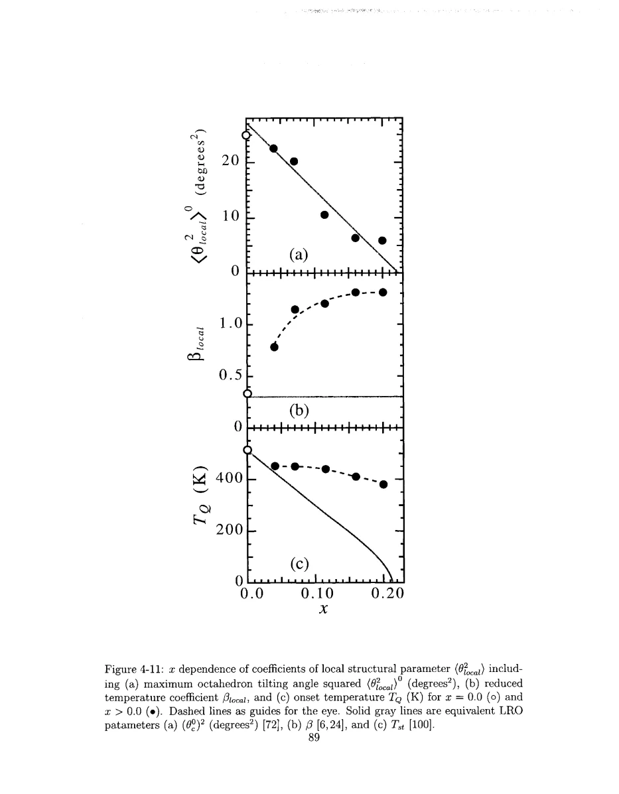
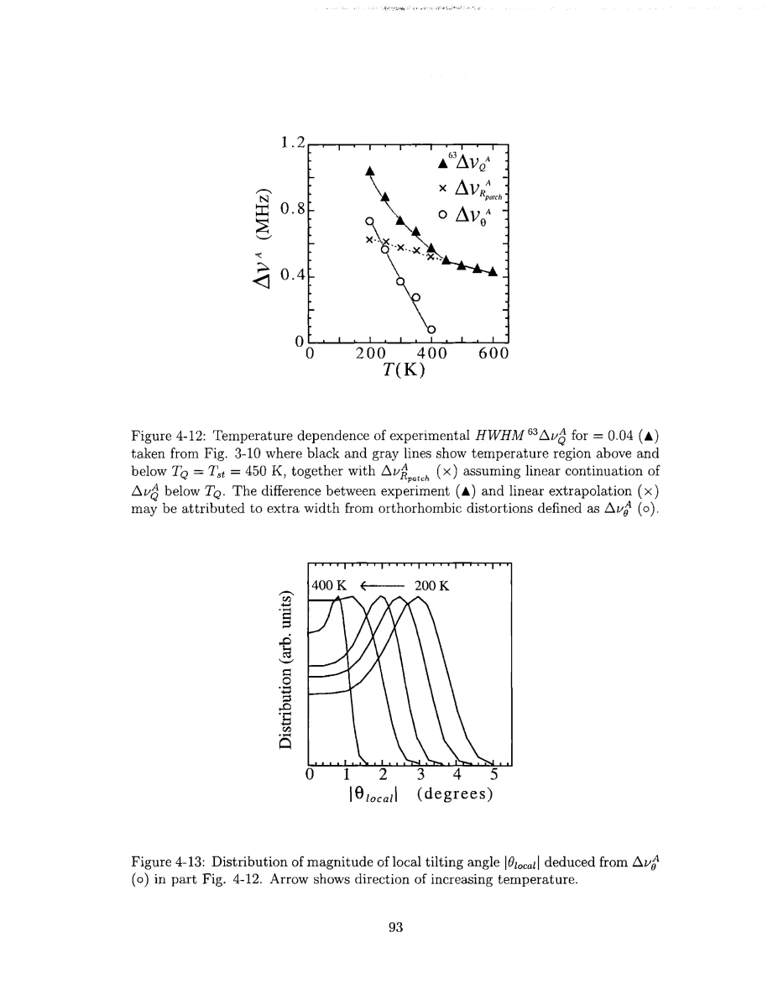

Singer · supplied source 2002 · chapter unit
6. Local distortion versus long-range order
The squared tilt can be finite even when opposite tilt directions cancel in a long-range average.
The question: How can a locally tilted octahedron coexist with an average tetragonal lattice?
Before you start: the terms you need
- Nominal x: Sr atoms per LSCO formula unit, used as the average hole-doping label.
- Electric field gradient (EFG): curvature of the electric potential at a nucleus; determines the Cu quadrupole resonance.
- Knight shift: the nuclear resonance shift caused by electronic magnetic response, with orbital and spin contributions.
- T₁ and T₂: recovery of longitudinal nuclear magnetization and decay of transverse coherence; they answer different questions.
- Hyperfine form factor: the wavevector-dependent weighting through which a nucleus samples electronic spin fluctuations.
- HWHM: half width at half maximum; the thesis also defines an effective width from the second moment.
See → explain → check
Follow the idea in 3 pictures.
Picture 1 / 3
Zero mean need not mean zero distortion
Look for: Compare opposite signed local tilts with their square.
Swipe across the picture to read every label, or enlarge it below.
- Mean angle
- Mean square angle
Teaching comparison of averages; local tilt signs and spatial arrangement are not measured by this schematic.
A tetragonal average can hide finite local tilt magnitude.
Picture 2 / 3
Local and coherent order differ
Look for: Identify the distinct quantities each technique averages.
Swipe across the picture to read every label, or enlarge it below.
- Local NQR
- Long-range diffraction
Teaching schematic; no measured points or calibrated scales.
NQR and diffraction can have different structural onsets without contradiction.
Picture 3 / 3
Separate widths only with assumptions
Look for: Use a baseline and independence assumption before assigning the residual.
Swipe across the picture to read every label, or enlarge it below.
- Observed variance
- Assumed electronic variance
- Residual tilt variance
Teaching schematic; no measured points or calibrated scales.
A fitted tilt distribution is conditional on the electronic-width continuation.
Explain it back.
Try answering aloud before opening the explanation.
Can ⟨θ⟩ = 0 and ⟨θ²⟩ > 0 coexist?
Yes. Equal positive and negative local tilts cancel in their mean but add in their mean square.
Is a tilt probability distribution uniquely fixed by one width and one mean?
No. Additional distribution-shape and mechanism assumptions are needed.
Go deeper Follow the full argument
Separate local magnitude from alignment
The Cu resonance center changes curvature below a local temperature TQ, including compositions where long-range diffraction shows a lower structural onset or no comparable transition. Singer uses an EFG calculation to relate this change to orthorhombic distortions of CuO₆ octahedra. To do so, the thesis imports relationships among tilt angle, strain and oxygen geometry from long-range diffraction and assumes that comparable constraints apply locally. The resulting NQR shift is proportional to the sample average of the squared local tilt. Opposite signs therefore contribute equally. A population of positive and negative tilts can yield zero mean angle but a finite mean-square angle. Long-range alignment and local distortion magnitude are different observables, so a local NQR anomaly does not by itself establish coherent structural order over the entire sample.
Read the fitted thermal parameters
The inferred mean-square tilt is parametrized below TQ by an amplitude and a reduced-temperature power. In the undoped compound its behavior is compatible with the long-range structural parameters. For doped samples the local onset can be higher and the thermal evolution more rounded. Singer interprets the combined local and diffraction results using both displacive changes in tilt magnitude and order–disorder changes in alignment. This is a physically useful distinction, but its quantitative parameters depend on the imported structural constraints and frequency baseline. The NQR fit is not an independent measurement of all atomic coordinates. In particular, the fact that NQR responds to θ² limits what can be said about the signs of tilts or their spatial correlations. The linked comparison of fitted local parameters with diffraction parameters should be read as evidence for different local and long-range behavior, not as a complete structural solution.
PDF p. 87 · PDF p. 88 · PDF p. 89 · PDF p. 90 · PDF p. 91 · PDF p. 92
The extra width has another ambiguity
For x = 0.04 below TQ, the full linewidth exceeds a proposed continuation of the random-donor and electronic-patch contribution. Singer assigns the remaining variance to a distribution of local tilt magnitudes. This requires assumptions: the electronic width continues smoothly, the added mechanisms are independent, and the extra structural width comes predominantly from tilt distributions. A trial distribution in θ² is adjusted to reproduce the line while maintaining the mean-square tilt inferred from the center. Those distributions are therefore conditional reconstructions rather than uniquely extracted measured probability densities. Adding widths in quadrature is appropriate to independent second-moment contributions, not a license to subtract arbitrary peak widths linearly. This unit supplies the reason to stop a naive Cu radius analysis below local structural onset and to seek the oxygen spin-channel cross-check.
Translate the mathematics Essential equations and their meaning
δ⟨νA⟩ ≈ c₀ ⟨θlocal²⟩
Symbols: c₀ ≈ 0.12 MHz/degree² in the source calculation; θlocal is local octahedral tilt.
Source Eq. 4.20 is a model mapping. It does not distinguish positive and negative tilt signs.
⟨θlocal²⟩ = ⟨θlocal²⟩₀ [(TQ−T)/TQ]^(2βlocal)
Symbols: TQ is the fitted local onset; βlocal and the zero-temperature amplitude are fit parameters.
Source Eq. 4.21 parametrizes the local mean-square distortion below TQ, rather than providing a universal critical exponent.
Δνobserved² ≈ Δνpatch² + Δνtilt²
Symbols: Widths use the thesis's second-moment convention and are assumed independent.
Source Eq. 4.22 supplies a conditional variance separation for the x = 0.04 analysis.
Read the evidence Guided original source pages

PDF p. 89

PDF p. 93
What the evidence supports—and where it stops
- Local structural constraints are borrowed from long-range measurements and assumed applicable.
- The variance separation and trial distribution are not unique atomistic reconstructions.
Source version, reading coverage and preservation
Every substantive chapter and appendix was read from locally generated Windows OCR of the scanned original. Key figures, symbols, equations and boundaries were checked on readable full-page renders; PDF and printed page numbers agree at inspected locations.
Reviewed body pages: 10, 11, 12, 13, 14, 15, 16, 17, 18, 19, 20, 21, 22, 23, 24, 25, 26, 27, 28, 29, 30, 31, 32, 33, 34, 35, 36, 37, 38, 39, 40, 41, 42, 43, 44, 45, 46, 47, 48, 49, 50, 51, 52, 53, 54, 55, 56, 57, 58, 59, 60, 61, 62, 63, 64, 65, 66, 67, 68, 69, 70, 71, 72, 73, 74, 75, 76, 77, 78, 79, 80, 81, 82, 83, 84, 85, 86, 87, 88, 89, 90, 91, 92, 93, 94, 95, 96, 97, 98, 99, 100, 101, 102, 103, 104, 105, 106, 107, 108, 109, 110, 111, 112, 113, 114, 115, 116, 117, 118, 119, 120, 121, 122, 123, 124, 125, 126, 127, 128, 129, 130, 131, 132, 133, 134, 135, 136, 137. Bibliography pages 138–144 were not independently verified against every cited publication. Front matter was inspected for title, abstract and chapter mapping. The guide does not claim manual visual reading of every scan or exact transcription of all derivations; OCR is imperfect and the damaged abstract region was checked against the conclusions.
Source SHA-256: e5fdb96ea81a06f7a51624e02fa58319dc3d21926a030e06fbbedc7061f5937d. Original file bytes preserved locally, and in this room’s original download.
Thesis - Singer - 2002 - Nuclear resonance of electronic inhomogeneity in LSCO.pdf